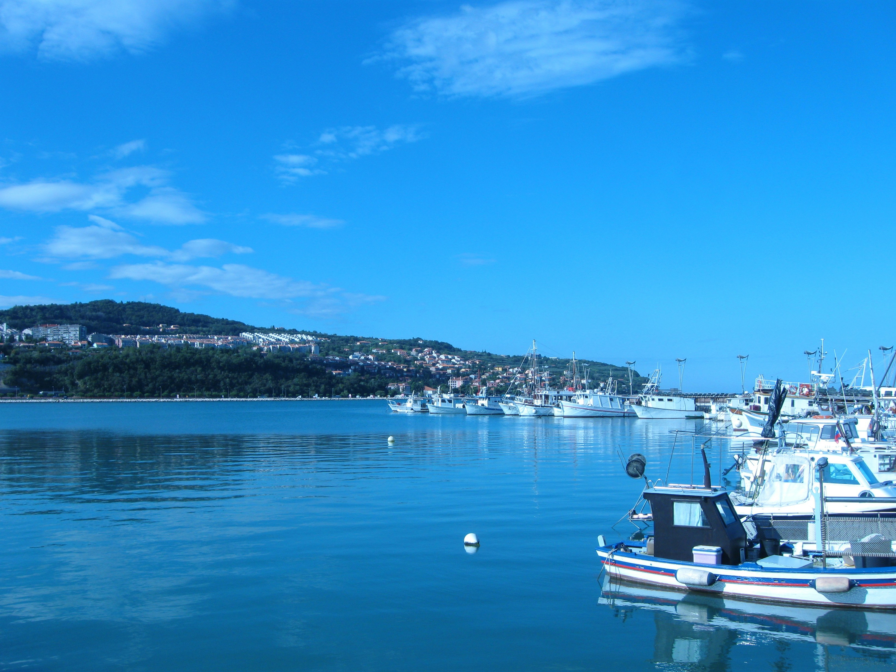
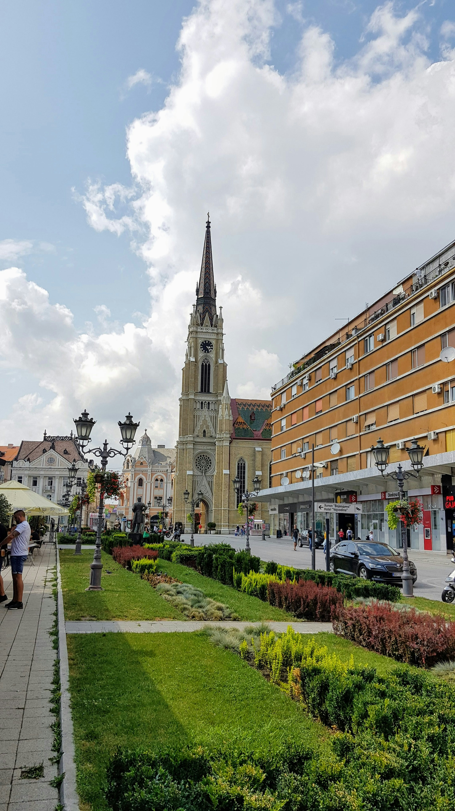
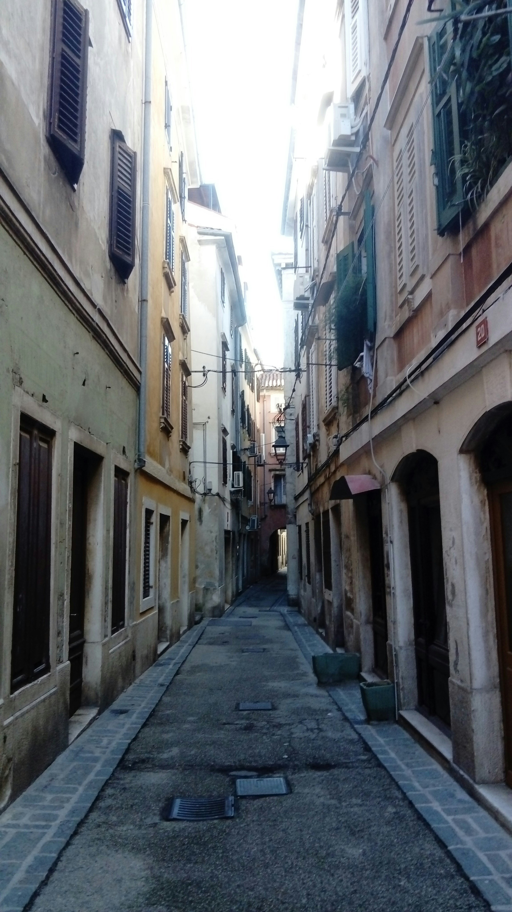

direktna vožnja do Kopera
Ruta Novi Sad — Koper prolazi kroz Hrvatsku i Sloveniju sve do Jadranskog primorja. Putovanje traje oko 7 do 8 sati uz kratke pauze za odmor. Vozimo modernim i udobnim kombijima opremljenim klimatizacijom, besplatnim WiFi-om i USB punjačima na svakom sedištu.
Svaki putnik dobija rezervisano sedište uz mogućnost ponošenja prtljaga. Naši iskusni vozači poznaju rutu do detalja i garantuju sigurno i ugodno putovanje u svim vremenskim uslovima tokom cele godine.
pogodnosti putovanja
Putovanje sa M-Way znači da ne morate brinuti o parkiranju, umoru od vožnje ni tranzitima. Preuzimamo vas na dogovorenoj adresi u Novom Sadu i dovozimo direktno do odredišta u Koperu ili okolini.
- udobna vozila sa klimatizacijom
- besplatan WiFi tokom vožnje
- USB punjači na svakom sedištu
- fleksibilno vreme polaska


Ruta prolazi kroz Sloveniju i nudi predivne pejzaže alpskog i primorskog predela. Granični prelazi su brzi i efikasni — naši vozači su upoznati sa svim neophodnim dokumentima i procedurama, tako da vi možete da se opustite i uživate u vožnji.
Cena prevoza uključuje sve troškove — goriva, putarine i naknade za granične prelaze. Nema skrivenih troškova. Rezervaciju možete obaviti online ili telefonski, a plaćanje je moguće gotovinom ili karticom. Grupne rezervacije i redovni putnici ostvaruju posebne popuste.